opencv_basic
图像基本操作
读取图像
1 | retval =cv2.imread (filename[,flags]) |
可以使用相对路径，如：
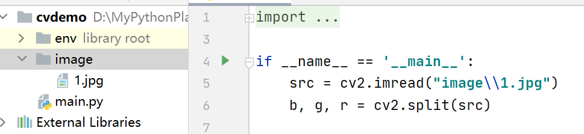也可以使用绝对路径。
显示图像
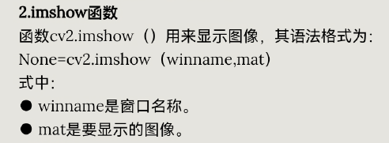在显示图像中，还涉及其他函数
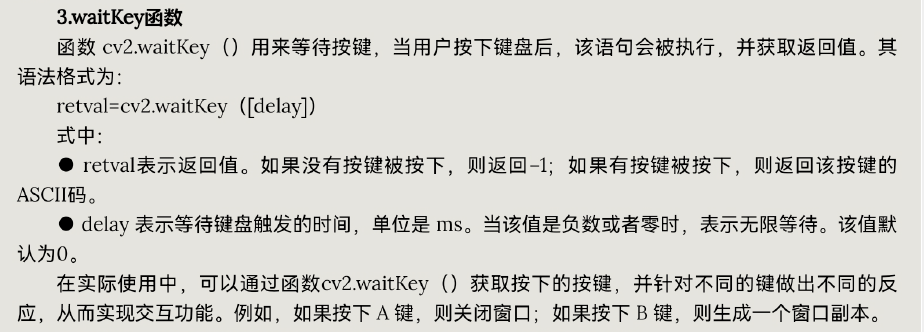 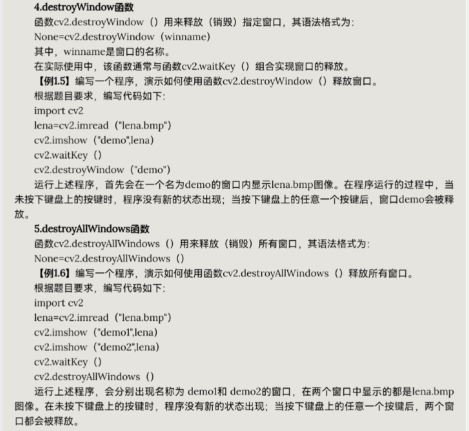以下的很多例子里都会见到这几个函数
保存图像
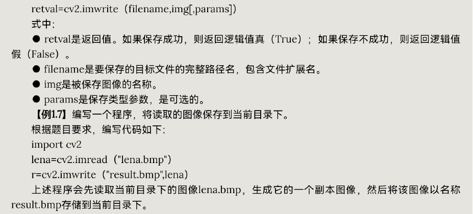图像处理基础
基本图像
二值图
仅包含黑色和白色，用01进行表示。
灰度图
可以在读取时将参数设为0，即为灰度图
通常， 计算机会将灰度处理为256个灰度级， 用数值区间[0,255]来表示。 其中， 数值”255”表示纯白色， 数值”0”表示纯黑色， 其余的数值表示从纯白到纯黑之间不同级别的灰度。用于表示256个灰度级的数值0~255, 正好可以用一个字节(8位二进制值）来表示。 所以灰度图一定是单通道的
彩图（以RGB色彩空间为例）
读取时参数为1，或者省略
在 RGB 色彩空间中， 存在 R (red, 红色）通道、 G (green, 绿色）通道和 B (blue, 蓝色）通
道， 共三个通道。 每个色彩通道值的范围都在[0,255]之间 ， 我们用这三个色彩通道的组合表示颜色。
以比较通俗的方式来解释就是， 有三个油漆桶， 分别装了红色、 绿色、 蓝色的油漆， 我们分别从每个油漆桶中取容星为0~255个单位的不等星的油漆， 将三种油漆混合就可以调配出一种新的颜色。三种油漆经过不同的组合， 共可以调配出所有常见的256x256x256=16 777 216种颜色。
通常用一个三维数组来表示一幅RGB色彩空间的彩色图像。一般情况下 ， 在RGB色彩空间中， 图像通道的顺序是R➔G➔B, 即第1个通道是R通道 ， 第2个通道是G通道， 第3个通道是B通道。 需要特别注意的是， 在OpenCV中， 通道的顺序是B➔G➔R。
像素处理
需要说明的是 ， 在OpenCV中， 最小的数据类型是无符号的8位数。 因此 ， 在OpenCV中实际上并没有二值图像这种数据类型， 二值图像经常是通过处理得到的 ， 然后使用0表示黑色， 使用255表示白色。
可以将二值图像理解为特殊的灰度图像， 这里仅以灰度图像为例讨论像素的读取和修改。 通过2.1节的分析可知， 可以将图像理解为一个矩阵，在面向Python的OpenCV(Open CV for Python)中，图像就是 Numpy 库中的数组。 一个 OpenCV 灰度图像是一个二维数组， 可以使用表达式访间其中的像素值。 例如， 可以使用image[0,0]访间图像image第0行第0列位置上的像素点。 第0行第0列位于图像的左上角 ， 其中第1个索引表示第0行， 第2个索引表示第0列。
同样地，彩图就是三维数组，分别是BGR三个二维数组。（RGB色彩空间）。
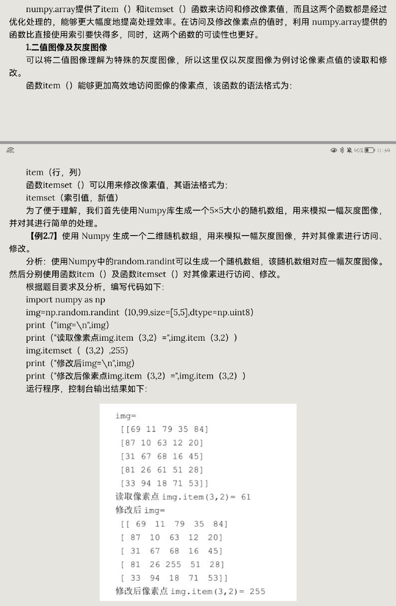这部分建议多学numpy。
通道操作（基于RGB）
通道拆分
通过索引拆分(numpy)
如下语句分别从中提取了B通道、 G通道、 R通道。
1 | b=img[: ,: ,O] |
通过函数拆分
函数cv2.split()能够拆分图像的通道。 例如， 可以使用如下语句拆分彩色BGR图像img, 得到B通道图像b、 G通道图像g和R通道图像r。
b,g,r=cv2.split (img)
上述语句与如下语句是等价的：
1 | b = cv2.split (a) [0] |
通道合并
通道合并是通道拆分的逆过程， 通过合并通道可以将三个通道的灰度图像构成一幅彩色图像。 函数cv2.merge(）可以实现图像通道的合并， 例如有B通道图像b、 G通道图像g和R通道图像r, 使用函数cv2.merge()可以将这三个通道合并为一幅BGR的三通道彩色图像。 其实现的语句为：
1 | bgr=cv2.merge ([b,g,r]) |
如：
1 | if __name__ == '__main__': |
图像属性
在图像处理过程中， 经常需要获取图像的属性， 例如图像的大小。
-
shape: 如果是彩色图像， 则返回包含行数 列数 通道数的数组；如果是二值图像或者灰度图像， 则仅返回行数和列数。 通过该属性的返回值是否包含通道数， 可以判断一幅图像是灰度图像（或二值图像）还是彩色图像。
-
size：返回图像的像素数目。 其值为行x列x通道数”， 灰度图像或者二值图像的通道数为1。
图像运算
加法
加号运算符
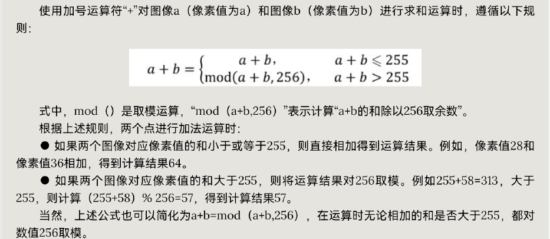add()函数
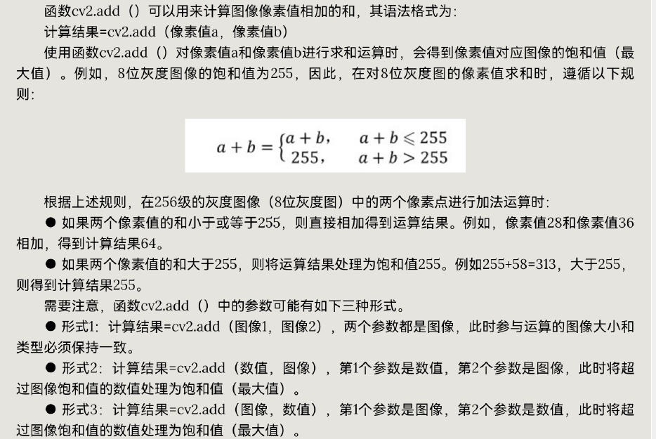
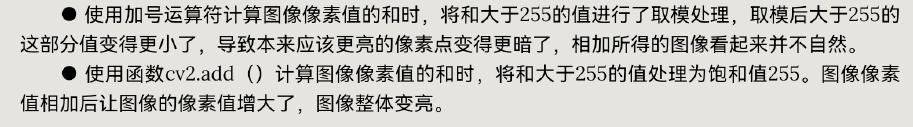
加权和
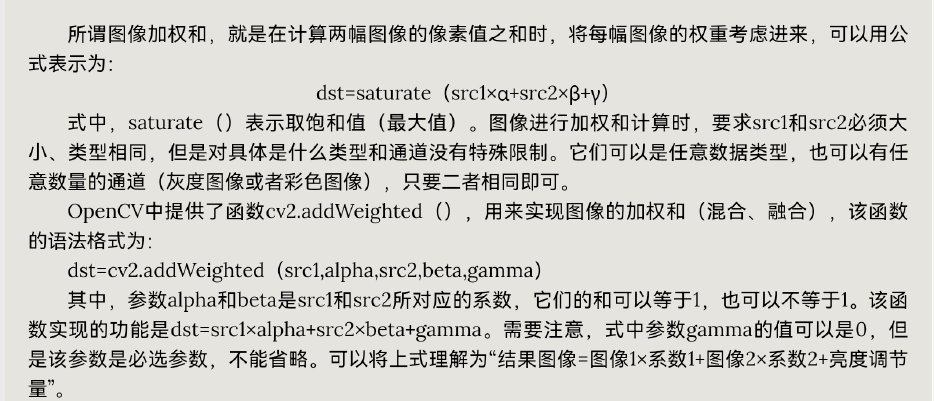按位逻辑
按位与
任何数与0都是0，与255则不变，都是二进制的按位与
按位或与按位非、按位异或
与按位与类似。
按位或：dst = cv2.bitwise_or(src[,mask])
按位非：dst = cv2.bitwise_not(src[,mask])
按位异或：dst = cv2.bitwise_xor(src[,mask])
掩模
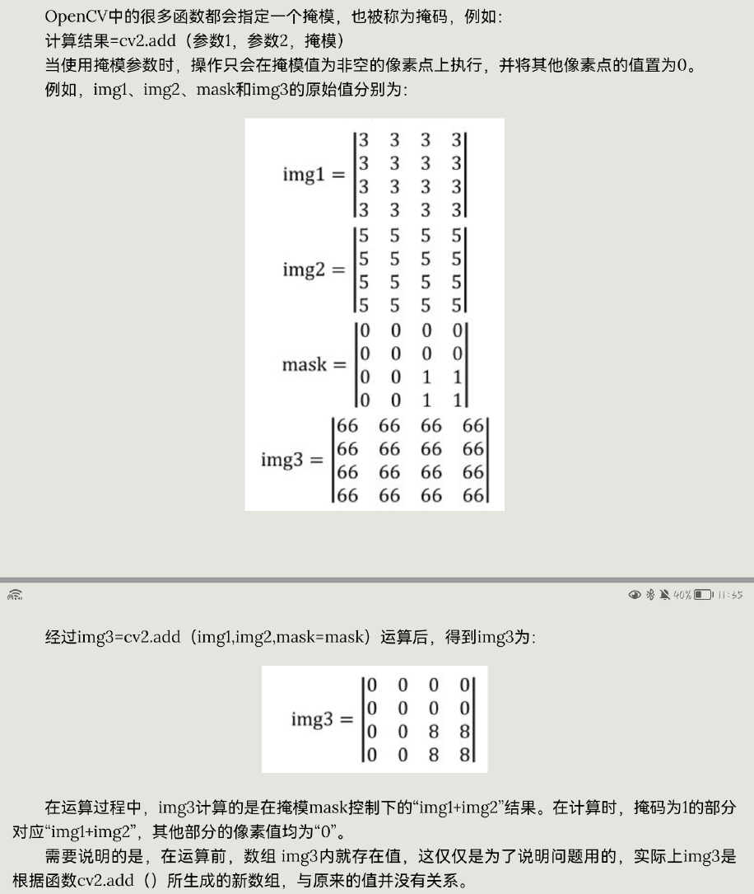可以理解为结果在返回前与掩模进行了按位与。
图像与数值的运算
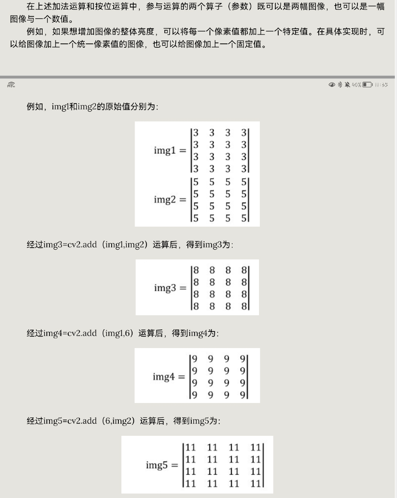位平面分解与其应用
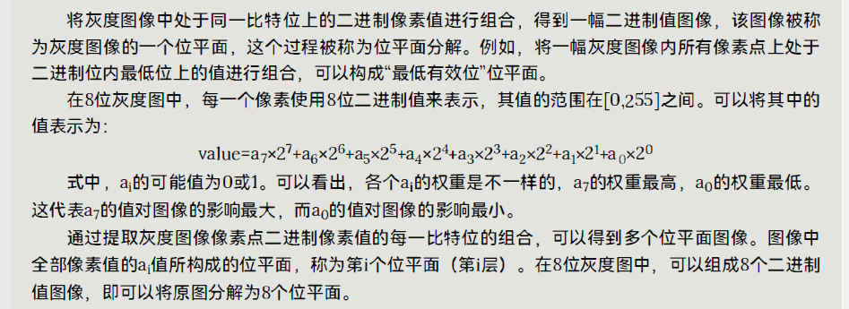例子：
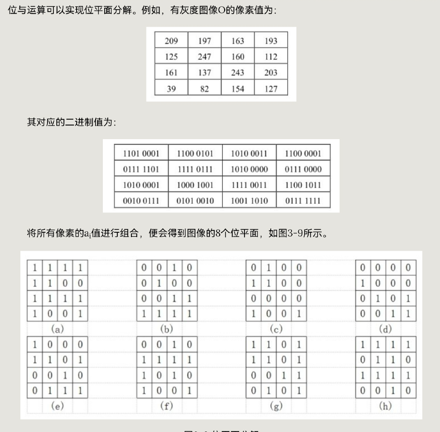应用：加解密与数字水印
加解密是使用密钥图像对原图进行位运算，数字水印是在最低位平面嵌入信息，因为这样对原图影响最小。
这里仅介绍了原始载体图像为灰度图像的情况，在实际中可以根据需要在多个通道内嵌入相同的水印（提高鲁棒性，即使部分水印丢失，也能提取出完整水印信息），或在各个不同的通道内嵌入不同的水印（提高嵌入容量）。在彩色图像的多个通道内嵌入水印的方法，与在灰度图像内嵌入水印的方法相同。
色彩空间
RGB是常见的色彩表示方法，但对于人眼来讲，很难直观地将一种色彩的RGB区分开来，并且在计算机处理色彩时，也有很多其他的颜色表现形式，这就形成了色彩空间。
色彩空间举例
1）RGB颜色空间
RGB（红绿蓝）是依据人眼识别的颜色定义出的空间，可表示大部分颜色。但在科学研究一般不采用RGB颜色空间，因为它的细节难以进行数字化的调整。它将色调，亮度，饱和度三个量放在一起表示，很难分开。它是最通用的面向硬件的彩色模型。该模型用于彩色监视器和一大类彩色视频摄像。
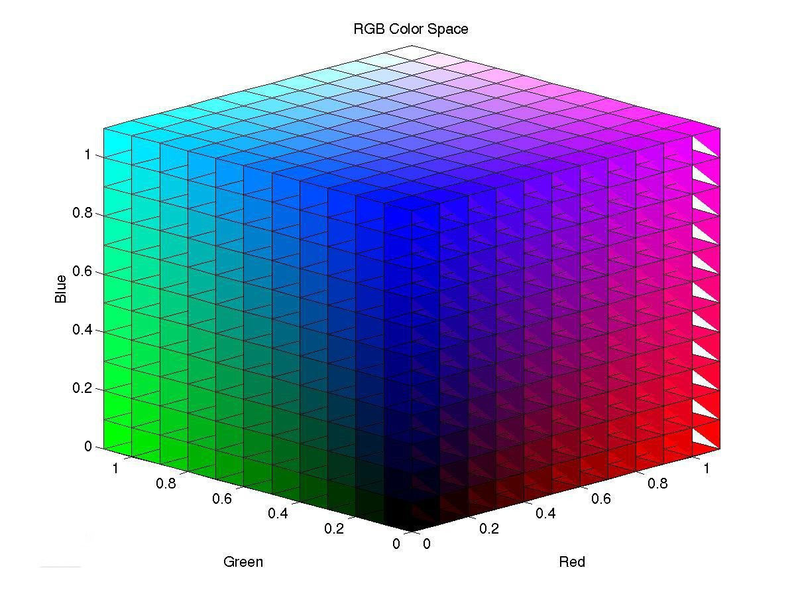2）CMY/CMYK颜色空间
CMY是工业印刷采用的颜色空间。它与RGB对应。简单的类比RGB来源于是物体发光，而CMY是依据反射光得到的。具体应用如打印机：一般采用四色墨盒，即CMY加黑色墨盒
3）HSV/HSB颜色空间
HSV颜色空间是为了更好的数字化处理颜色而提出来的。有许多种HSX颜色空间，其中的X可能是V,也可能是I，依据具体使用而X含义不同。H是色调，S是饱和度，I是强度。HSB（Hue, Saturation, Brightness）颜色模型，这个颜色模型和HSL颜色模型同样都是用户台式机图形程序的颜色表示， 用六角形锥体表示自己的颜色模型。
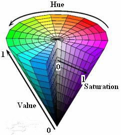
4）HSI/HSL颜色空间
HSI颜色空间是为了更好的数字化处理颜色而提出来的。有许多种HSX颜色空间，其中的X可能是V,也可能是I，依据具体使用而X含义不同。H是色调，S是饱和度，I是强度。HSL（Hue, Saturation, Lightness）颜色模型，这个颜色模型都是用户台式机图形程序的颜色表示， 用六角形锥体表示自己的颜色模型。
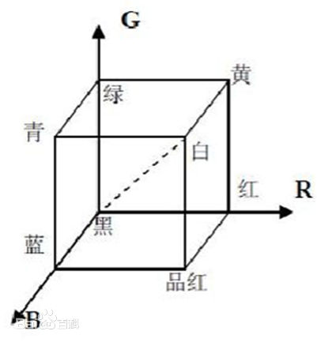5）Lab颜色空间
Lab颜色模型是由CIE（国际照明委员会）制定的一种色彩模式。自然界中任何一点色都可以在Lab空间中表达出来，它的色彩空间比RGB空间还要大。另外，这种模式是以数字化方式来描述人的视觉感应， 与设备无关，所以它弥补了RGB和CMYK模式必须依赖于设备色彩特性的不足。由于Lab的色彩空间要比RGB模式和CMYK模式的色彩空间大。这就意味着RGB以及CMYK所能描述的色彩信息在Lab空间中都能 得以影射。Lab颜色模型取坐标Lab，其中L亮度；a的正数代表红色，负端代表绿色；b的正数代表黄色， 负端代表兰色(a,b)有L=116f(y)-16, a=500[f(x/0.982)-f(y)], b=200[f(y)-f(z/1.183 )]；其中： f(x)=7.787x+0.138, x<0.008856; f(x)=(x)1/3,x>0.008856
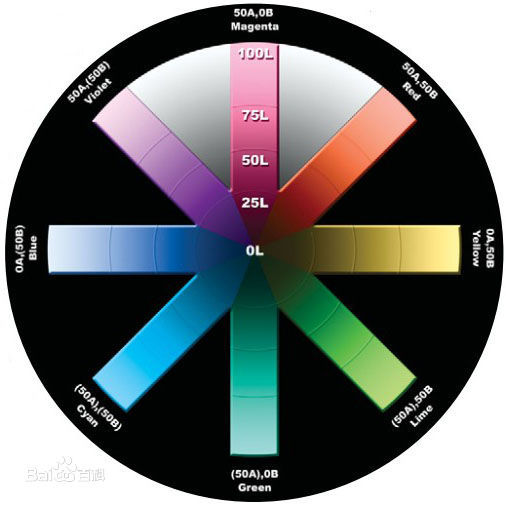6）YUV/YCbCr颜色空间
YUV是通过亮度-色差来描述颜色的颜色空间。
亮度信号经常被称作Y，色度信号是由两个互相独立的信号组成。视颜色系统和格式不同，两种色度信号经常被称作UV或PbPr或CbCr。这些都是由不同的编码格式所产生的，但是实际上，他们的概念基本相同。在DVD中，色度信号被存储成Cb和Cr（C代表颜色，b代表蓝色，r代表红色）。
YCbCr：
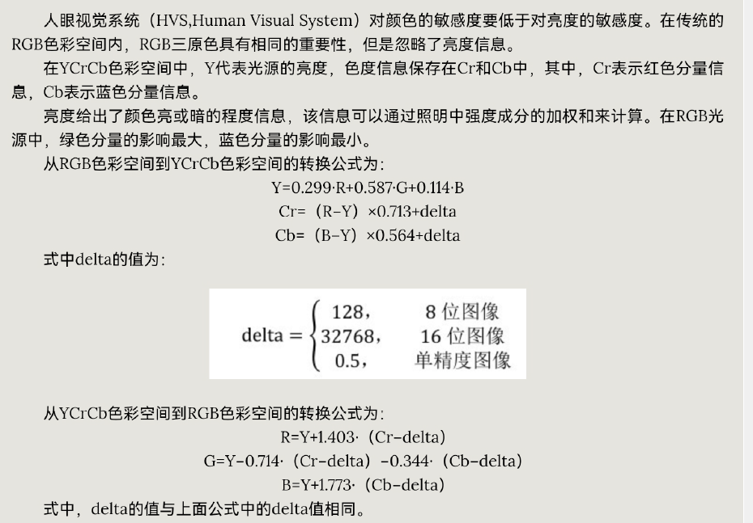色彩空间转换
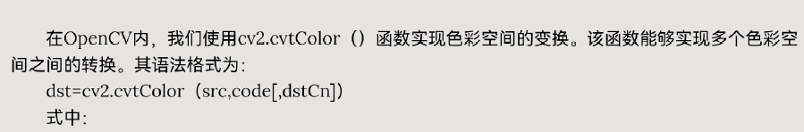 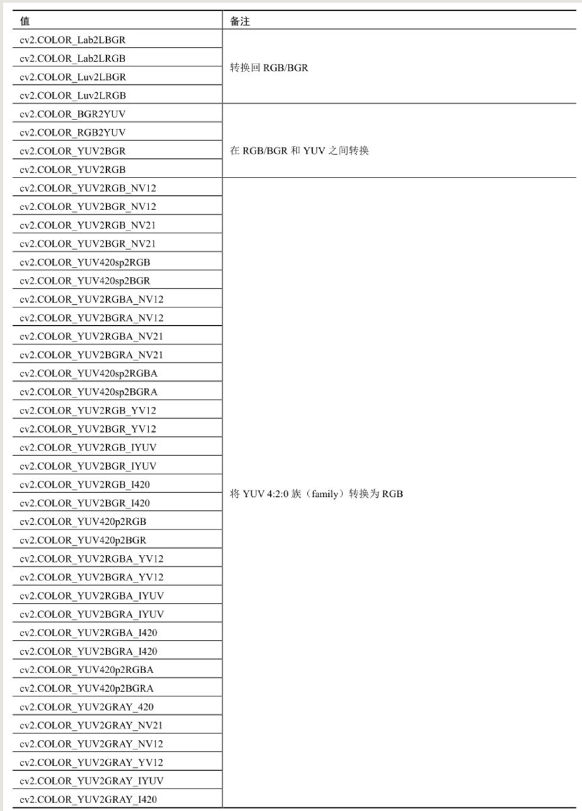等等
alpha通道
在RGB色彩空间三个通道的基础上 ，还可以加上一个A通道，也叫alpha通道，表示透明度。这种4 个通道的色彩空间被称为RGBA色彩空间，PNG图像是一种典型的4通道图像。alpha 通道的赋值范围是[0,1]， 或者[0,255]， 表示从透明到不透明。
几何变换
略
阈值处理
阈值处理是指剔除图像内像素值高于一定值或者低于一定值的像素点。
阈值化处理
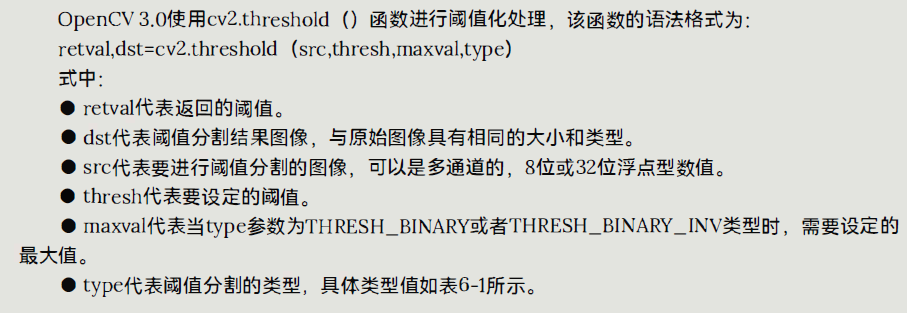 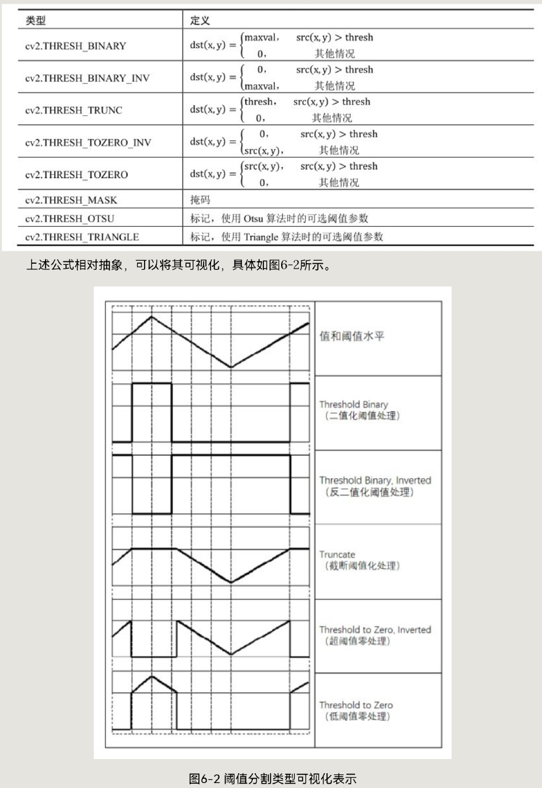如：
1 | if __name__ == '__main__': |
或者，修改相应参数
1 | ret,dst = cv2.threshold(src,70,150,cv2.THRESH_BINARY) |
反二值化：
1 | ret,dst = cv2.threshold(src,127,255,cv2.THRESH_BINARY_INV) |
自适应阈值处理
对于色彩均衡的图像，直接使用一个阈值就能完成对图像的闹值化处理。 但是，有时图像的色彩是不均衡的，此时如果只使用一个阈值，就无法得到清晰有效的阈值分割结果图像。
在进行阈值处理时，自适应阈值处理的方式通过计算每个像素点周围临近区域的加权平均值获得阈值，并使用该闯值对当前像素点进行处理。与普通的阈值处理方法相比，自适应阈值处理能够更好地处理明暗差异较大的图像。
处理的图像必须是八位单通道图像 ！！
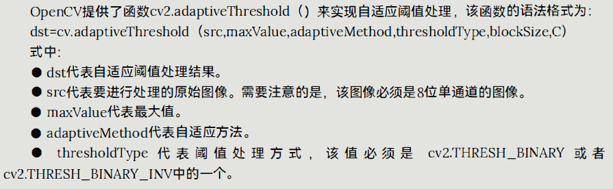 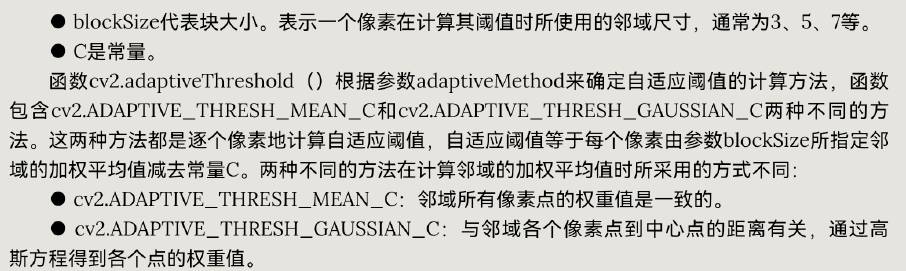1 | if __name__ == '__main__': |
最优阈值函数
实际处理的图像往往是很复杂的， 不太可能像上述img那样 ， 一眼就观察出最合适的阈值。 如果一个个去尝试， 工作量无疑是巨大的。Otsu方法能够根据当前图像给出最佳的类间分割阈值。 简而言之， Otsu方法会遍历所有可能阈值， 从而找到最佳的阈值。
在 OpenCV 中， 通过在函数 cv2.threshold ()中对参数 type 的类型多传递 一个参数 “cv2.THRESH_ OTSU” ， 即可实现Otsu方式的阈值分割。需要说明的是， 在使用Otsu方法时， 要把阈值设为0。此时的函数cv2.threshold()会自动寻找最优阈值， 并将该阈值返回。
处理的图像必须是八位单通道图像 ！！
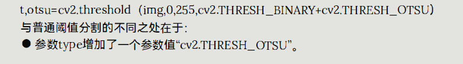- 设定的阈值为0。
- 返回值t是Otsu方法计算得到并使用的最优阈值。
- 需要注意，如果采用普通的阈值分割，返回的闯值就是设定的阈值。
1 | if __name__ == '__main__': |
图像平滑处理（滤波）
如果针对图像内的每一个像素点都进行上述平滑处理， 就能够对整幅图像完成平滑处理， 有效地去除图像内的噪声信息。图像平滑处理的基本原理是， 将噪声所在像素点的像素值处理为其周围临近像素点的值的近似值。
均值滤波
原理
均值滤波是指用当前像素点周围N·N个像素值的均值来代替当前像素值。在进行均值滤波时，首先要考虑需要对周围多少个像素点取平均值。通常情况下，我们会以当前像素点为中心， 对行数和列数相等的一块区域内的所有像素点的像素值求平均。针对边缘像素点， 可以只取图像内存在的周围邻域点的像素值均值。
以均值滤波为例，相当于：
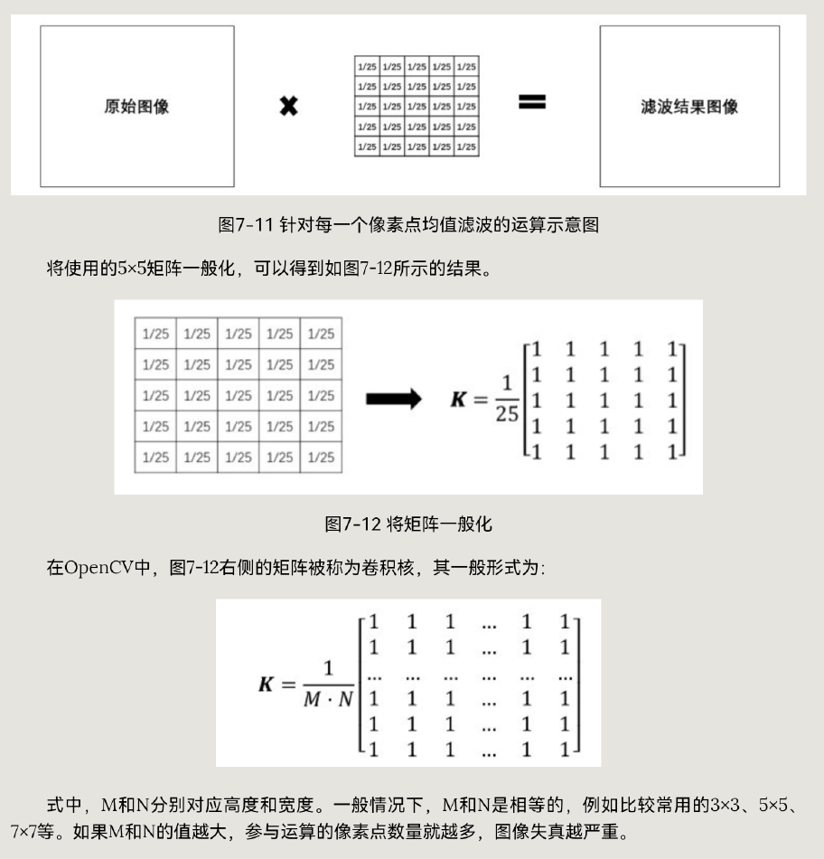函数
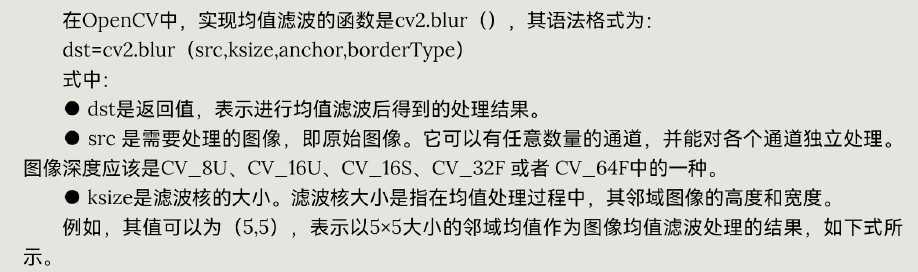 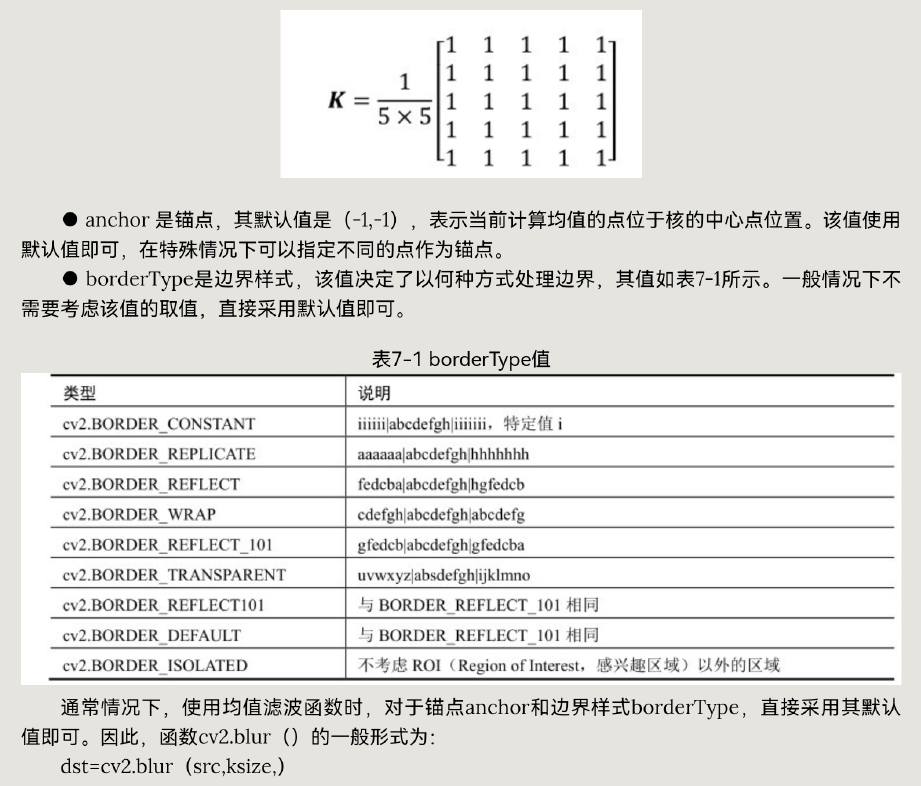卷积核小，滤波效果差，卷积核大，图片失真严重（类似高斯模糊），类似于近视的感觉
1 | if __name__ == '__main__': |
方框滤波
原理
方框滤波中，可以自由选择是否对均值滤波的结果进行归一化， 即可以自由选择滤波结果是邻域像素值之和的平均值，还是邻域像素值之和。
函数
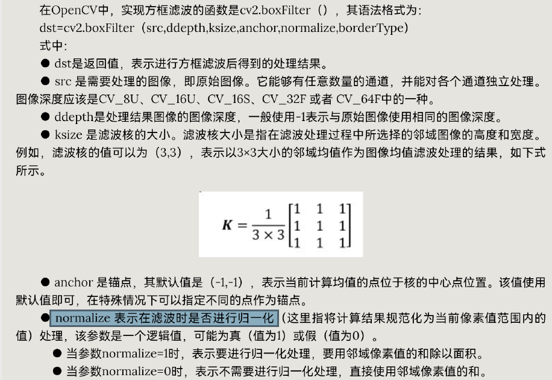当 normalize=0时， 因为不进行归一化处理， 因此滤波得到的值很可能超过当前像素值范围的最大值， 从而被截断为最大值。 这样， 就会得到一幅纯白色的图像。
高斯滤波
原理
在进行均值滤波和方框滤波时，其邻域内每个像素的权重是相等的。在高斯滤波中，会将中心点的权重值加大， 远离中心点的权重值减小，在此基础上计算邻域内各个像素值不同权重的和。
例如：
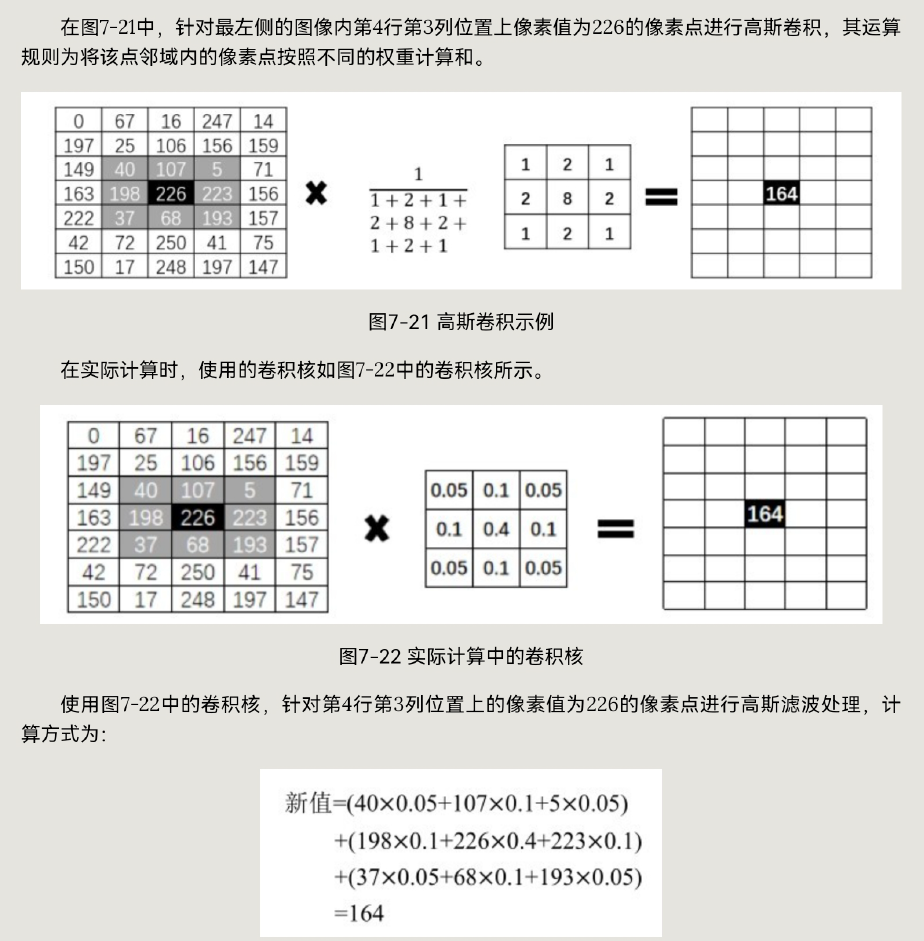函数
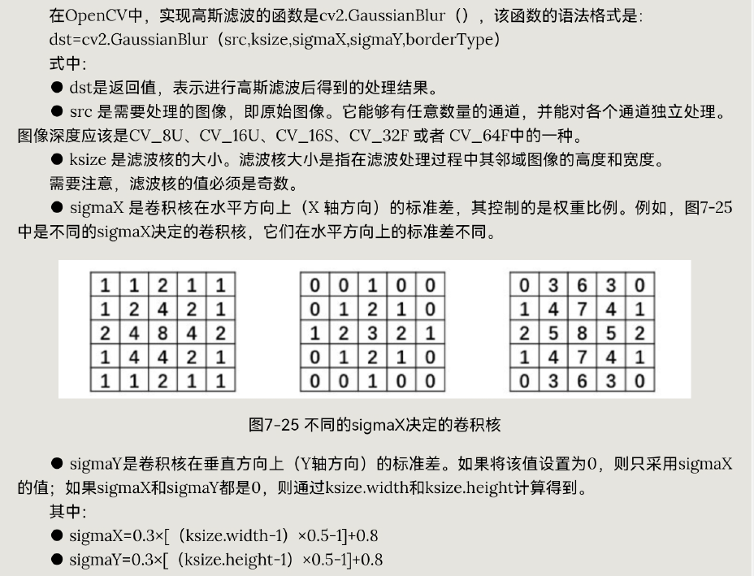滤波核必须是奇数！！
在该函数中， sigmaY和borderType是可选参数。 sigmaX是必选参数， 但是可以将该参数设置为0, 让函数自己去计算sigmaX的具体值。
官方文档建议显式地指定ksize、 sigmaX和sigmaY三个参数的值， 以避免将来函数修改后可能造成的语法错误。 当然， 在实际处理中， 可以显式指定sigmaX和 sigmaY为默认值0。因此， 函数cv2.GaussianBlur()的常用形式为：
1 | dst = cv2.GaussianBlur (src,ksize,0,0) |
效果略好于方框滤波
1 | if __name__ == '__main__': |
中值滤波
原理
中值滤波会取当前像素点及其周围临近像素点（一共有奇数个像素点）的像素值，将这些像素值排序，然后将位于中间位置的像素值作为当前像素点的像素值。(取中位数)
函数
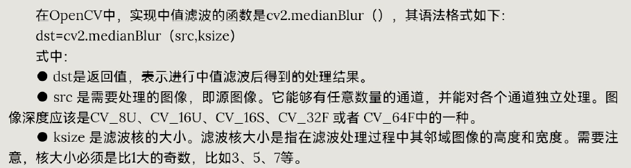双边滤波
原理
前述滤波方式基本都只考虑了空间的权重信息， 这种情况计算起来比较方便， 但是在边缘信息的处理上存在较大的问题。在均值滤波、 方框滤波、 高斯滤波中， 都会计算边缘上各个像素点的加权平均值， 从而模糊边缘息。
双边滤波在计算某一个像素点的新值时， 不仅考虑距离信息（距离越远，权重越小），还考虑色彩信息（色彩差别越大，权重越小）。双边滤波综合考虑距离和色彩的权重结果，既能够有效地去除噪声，又能够较好地保护边缘信息。
在双边滤波中，当处在边缘时，与当前点色彩相近的像素点（颜色距离很近）会被给予较大的权重值；而与当前色彩差别较大的像素点（颜色距离很远）会被给予较小的权重值（极端情况下权重可能为0, 直接忽略该点），这样就保护了边缘信息。
函数
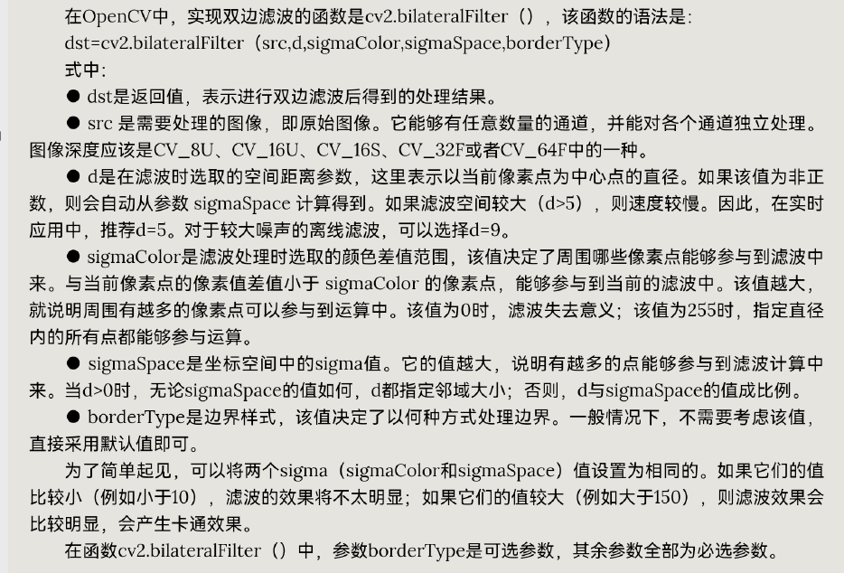双边滤波对边缘的保护很好，但对噪声的处理不是很好。
2D卷积
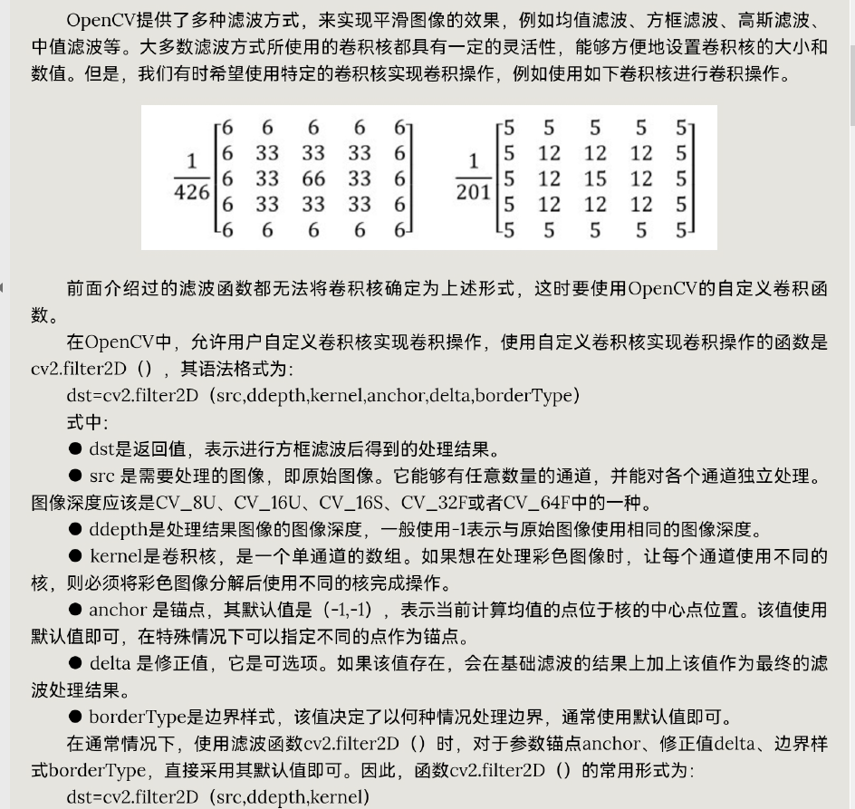形态学操作
这一部分是以后很多操作的基础，以后很多操作或多或少都跟形态学有关系。
腐蚀
原理
腐蚀能够将图像的边界点消除，使图像沿着边界向内收缩，也可以将小于指定结构体元素的部分去除。腐蚀用来“收缩“或者“细化”二值图像中的前景，借此实现去除噪声、元素分割等功能。在腐蚀过程中，通常使用一个结构元来逐个像素地扫描要被腐蚀的图像，并根据结构元和被腐蚀图像的关系来确定腐蚀结果。
需要注意的是，腐蚀操作等形态学操作是逐个像素地来决定值的，每次判定的点都是与结构元中心点所对应的点。图8-3中的两幅图像表示结构元与前景色的两种不同关系。根据这两种不同的关系来决定，腐蚀结果图像中的结构元中心点所对应位置像素点的像素值。
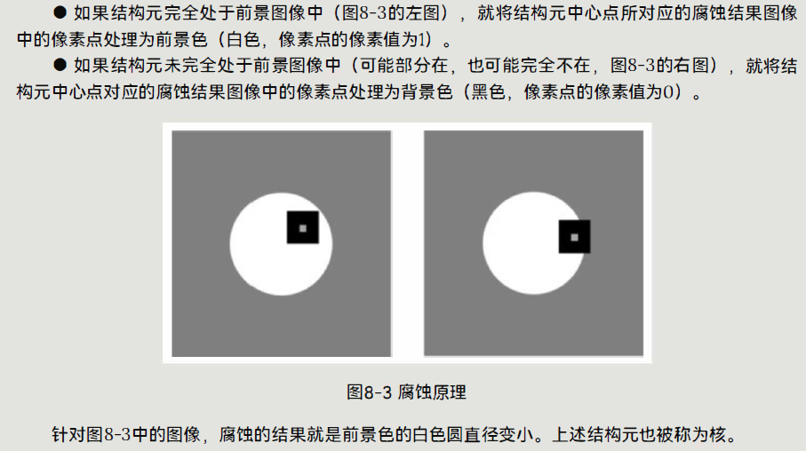函数
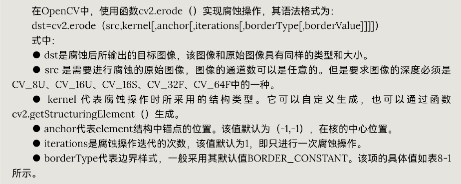 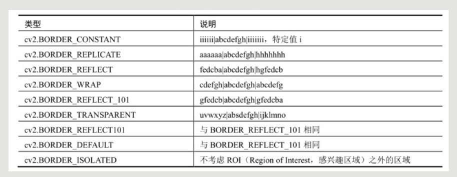例如：
1 | if __name__ == '__main__': |
膨胀
原理
与腐蚀相反，同样地，处理思路也与其相反。
- 如果结构元中任意一点处千前景图像中，就将膨胀结果图像中对应像素点处理为前景色。
- 如果结构元完全处千背景图像外，就将膨胀结果图像中对应像素点处理为背景色。
函数
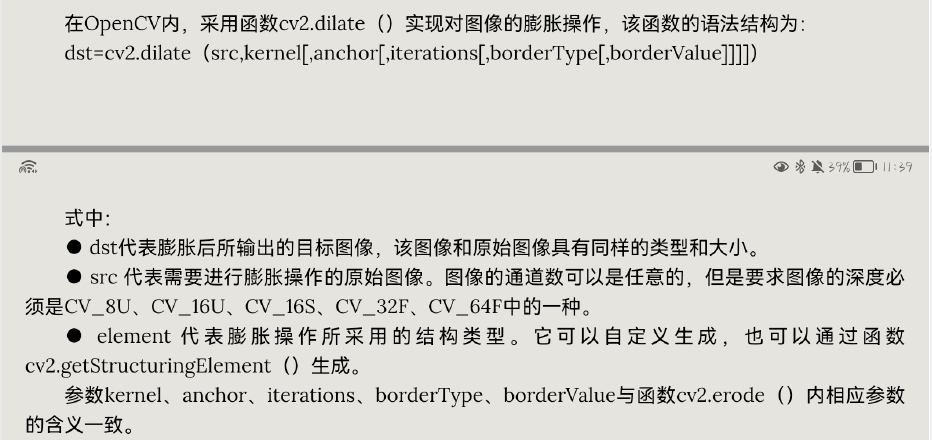1 | if __name__ == '__main__': |
通用形态学函数
函数
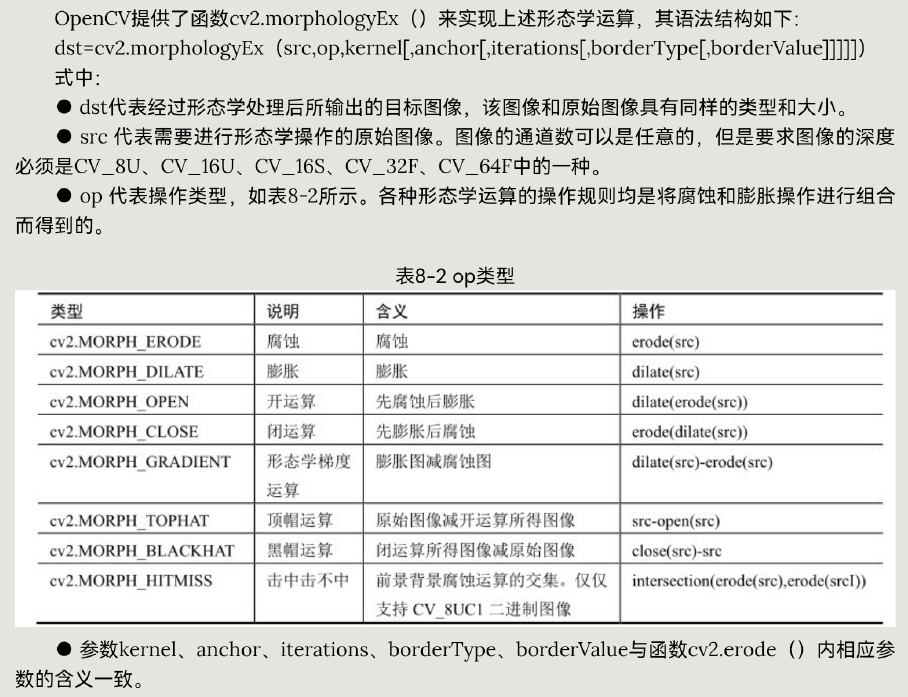-
开运算进行的操作是先将图像腐蚀，再对腐蚀的结果进行膨胀。开运算可以用千去噪、计数等。（计数：可以利用开运算将连接在一起的不同区域划分开）
-
闭运算是先膨胀、 后腐蚀的运算， 它有助于关闭前景物体内部的小孔， 或去除物体上的小黑点，还可以将不同的前景图像进行连接。
-
形态学梯度运算是用图像的膨胀图像减腐蚀图像的操作， 该操作可以获取原始图像中前景图像的边缘。
-
礼帽运算是用原始图像减去其开运算图像的操作。 礼帽运算能够获取图像的噪声信息，或者得到比原始图像的边缘更亮的边缘信息。
-
黑帽运算是用闭运算图像减去原始图像的操作。黑帽运算能够获取图像内部的小孔，或前景色中的小黑点， 或者得到比原始图像的边缘更暗的边缘部分。
核函数
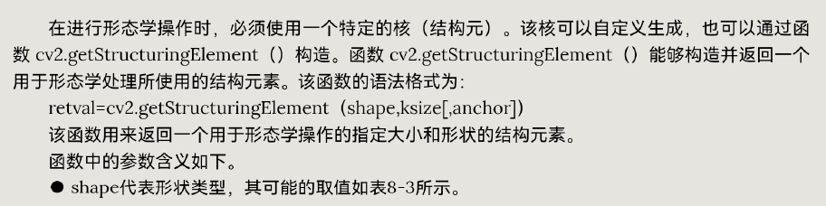图像梯度
图像梯度计算的是图像变化的速度。对千图像的边缘部分，其灰度值变化较大，梯度值也较大；相反，对于图像中比较平滑的部分， 其灰度值变化较小，相应的梯度值也较小。一般情况下，图像梯度计算的是图像的边缘信息。
原书对此做了很详细的讲解，可以直接参考。
Roberts 算子
Roberts 算子，又称罗伯茨算子，是一种最简单的算子，是一种利用局部差分算子寻找边缘的算子。他采用对角线方向相邻两象素之差近似梯度幅值检测边缘。检测垂直边缘的效果好于斜向边缘，定位精度高，对噪声敏感，无法抑制噪声的影响。
1963年， Roberts 提出了这种寻找边缘的算子。 Roberts 边缘算子是一个 2x2 的模版，采用的是对角方向相邻的两个像素之差。
Roberts 算子的模板分为水平方向和垂直方向，如下所示，从其模板可以看出， Roberts 算子能较好的增强正负 45 度的图像边缘。
Roberts 算子在水平方向和垂直方向的计算公式如下：
Roberts 算子像素的最终计算公式如下：
实现 Roberts 算子，我们主要通过 OpenCV 中的 filter2D() 这个函数，这个函数的主要功能是通过卷积核实现对图像的卷积运算：
1 | def filter2D(src, ddepth, kernel, dst=None, anchor=None, delta=None, borderType=None) |
- src: 输入图像
- ddepth: 目标图像所需的深度
- kernel: 卷积核
接下来开始写代码，首先是图像的读取，并把这个图像转化成灰度图像，这个没啥好说的：
1 | # 读取图像 |
然后是使用 Numpy 构建卷积核，并对灰度图像在 x 和 y 的方向上做一次卷积运算：
1 | # Roberts 算子 |
注意：在进行了 Roberts 算子处理之后，还需要调用convertScaleAbs()函数计算绝对值，并将图像转换为8位图进行显示，然后才能进行图像融合：
1 | # 转 uint8 ,图像融合 |
最后是通过 pyplot 将图像显示出来：
1 | # 显示图形 |
最终结果如下：
Prewitt 算子
Prewitt 算子是一种一阶微分算子的边缘检测，利用像素点上下、左右邻点的灰度差，在边缘处达到极值检测边缘，去掉部分伪边缘，对噪声具有平滑作用。
由于 Prewitt 算子采用 3 * 3 模板对区域内的像素值进行计算，而 Robert 算子的模板为 2 * 2 ，故 Prewitt 算子的边缘检测结果在水平方向和垂直方向均比 Robert 算子更加明显。Prewitt算子适合用来识别噪声较多、灰度渐变的图像。
Prewitt 算子的模版如下：
在代码实现上， Prewitt 算子的实现过程与 Roberts 算子比较相似，我就不多介绍，直接贴代码了：
1 | import cv2 as cv |
从结果上来看， Prewitt 算子图像锐化提取的边缘轮廓，其效果图的边缘检测结果比 Robert 算子更加明显。
Sobel 算子
Sobel 算子的中文名称是索贝尔算子，是一种用于边缘检测的离散微分算子，它结合了高斯平滑和微分求导。
Sobel 算子在 Prewitt 算子的基础上增加了权重的概念，认为相邻点的距离远近对当前像素点的影响是不同的，距离越近的像素点对应当前像素的影响越大，从而实现图像锐化并突出边缘轮廓。
算法模版如下：
Sobel 算子根据像素点上下、左右邻点灰度加权差，在边缘处达到极值这一现象检测边缘。对噪声具有平滑作用，提供较为精确的边缘方向信息。因为 Sobel 算子结合了高斯平滑和微分求导（分化），因此结果会具有更多的抗噪性，当对精度要求不是很高时， Sobel 算子是一种较为常用的边缘检测方法。
Sobel 算子近似梯度的大小的计算公式如下：
梯度方向的计算公式如下：
如果以上的角度 θ 等于零，即代表图像该处拥有纵向边缘，左方较右方暗。
在 Python 中，为我们提供了 Sobel() 函数进行运算，整体处理过程和前面的类似，代码如下：
1 | import cv2 as cv |
Laplacian 算子
拉普拉斯（ Laplacian ）算子是 n 维欧几里德空间中的一个二阶微分算子，常用于图像增强领域和边缘提取。
Laplacian 算子的核心思想：判断图像中心像素灰度值与它周围其他像素的灰度值，如果中心像素的灰度更高，则提升中心像素的灰度；反之降低中心像素的灰度，从而实现图像锐化操作。
在实现过程中， Laplacian 算子通过对邻域中心像素的四方向或八方向求梯度，再将梯度相加起来判断中心像素灰度与邻域内其他像素灰度的关系，最后通过梯度运算的结果对像素灰度进行调整。
Laplacian 算子分为四邻域和八邻域，四邻域是对邻域中心像素的四方向求梯度，八邻域是对八方向求梯度。
四邻域模板如下：
八邻域模板如下：
通过模板可以发现，当邻域内像素灰度相同时，模板的卷积运算结果为0；当中心像素灰度高于邻域内其他像素的平均灰度时，模板的卷积运算结果为正数；当中心像素的灰度低于邻域内其他像素的平均灰度时，模板的卷积为负数。对卷积运算的结果用适当的衰弱因子处理并加在原中心像素上，就可以实现图像的锐化处理。
在 OpenCV 中， Laplacian 算子被封装在 Laplacian() 函数中，其主要是利用Sobel算子的运算，通过加上 Sobel 算子运算出的图像 x 方向和 y 方向上的导数，得到输入图像的图像锐化结果。
1 | import cv2 as cv |
最后
边缘检测算法主要是基于图像强度的一阶和二阶导数，但导数通常对噪声很敏感，因此需要采用滤波器来过滤噪声，并调用图像增强或阈值化算法进行处理，最后再进行边缘检测。
最后我先使用高斯滤波去噪之后，再进行边缘检测：
1 | import cv2 as cv |
canny边缘检测
非极大抑制
双阈值确定边缘
函数
以上几步操作都封装好了，可以直接调用。
样例：threshold两个值较小时精度较高
1 | if __name__ == '__main__': |
图像金字塔
图像金字塔是图像多尺度表达的一种，是一种以多分辨率来解释图像的有效但概念简单的结构。一幅图像的金字塔是一系列以金字塔形状排列的分辨率逐步降低，且来源于同一张原始图的图像集合。其通过梯次向下采样获得，直到达到某个终止条件才停止采样。我们将一层一层的图像比喻成金字塔，层级越高，则图像越小，分辨率越低。
高斯金字塔
高斯金字塔是由底部的最大分辨率图像逐次向下采样得到的一系列图像。最下面的图像分辨率最高，越往上图像分辨率越低。
这个过程实际上就是一个重复高斯平滑并重新对图像采样的过程。
- 对于原始图像先进行一次高斯平滑处理，使用高斯核（
5 * 5）进行一次卷积处理。下面是5 * 5的高斯核。
- 接下来是对图像进行采样，这一步会去除图像中的偶数行和奇数列，从而得到一张图像。
- 再然后是重复上面两步，直到得到最终的目标图像为止。
从上面的步骤可以看出，再每次循环中，得到的结果图像只有原图像的 1/4 大小（横纵向均做隔行采样）。
注意：向下采样会逐渐丢失图像信息，属于非线性的处理，此过程不可逆，属于有损处理。
高斯金字塔向上采样：
- 将图像在每个方向扩大为原来的两倍，新增的行和列以 0 填充。
- 使用高斯核（
5 * 5）对得到的图像进行一次高斯平滑处理，获得 「新增像素」的近似值。
注意：此过程与向下采样的过程一样，属于非线性处理，无法逆转，属于有损处理。
此过程得到的图像为放大后的图像，与原图相比会比较模糊，因为在缩放的过程中丢失了一些图像信息，如果想在缩小和放大整个过程中减少信息的丢失。
如果在缩放过程中想要减少图像信息的丢失，这就引出了第二个图像金字塔 —— 「拉普拉斯金字塔」 。
拉普拉斯金字塔
拉普拉斯金字塔可以认为是残差金字塔，用来存储下采样后图片与原始图片的差异。
上面我们介绍了基于高斯金字塔，一个原始图像 Gi ，先进行向下采样得到 G(i-1) ，再对 G(i-1) 进行向上采样得到 Up(Down(Gi)) ，最终得到的 Up(Down(Gi)) 与原始的 Gi 是存在差异的。
这是因为向下采样丢失的信息并不能由向上采样来进行恢复，高斯金字塔是一种有损的采样方式。
如果我们想要完全恢复原始图像，那么我们在进行采样的时候就需要保留差异信息。
这就是拉普拉斯金字塔的核心思想，每次向下采样后，将再次向上采样，得到向上采样的 Up(Down(Gi)) 后，记录 Up(Down(Gi)) 与 Gi 的差异信息。
函数
OpenCV 为向上采样和向下采样提供了两个函数：pyrDown() 和 pyrUp() 。
pyrDown() 的原函数如下：
1 | def pyrDown(src, dst=None, dstsize=None, borderType=None) |
- src: 表示输入图像。
- dst: 表示输出图像，它与src类型、大小相同。
- dstsize: 表示降采样之后的目标图像的大小。
- borderType: 表示表示图像边界的处理方式。
注意：dstsize 参数是有默认值的，调用函数的时候不指定第三个参数，那么这个值是按照 Size((src.cols+1)/2, (src.rows+1)/2) 计算的。而且不管如何指定这个参数，一定必须保证满足以下关系式：|dstsize.width * 2 - src.cols| ≤ 2; |dstsize.height * 2 - src.rows| ≤ 2。也就是说降采样的意思其实是把图像的尺寸缩减一半，行和列同时缩减一半。
pyrUp() 的原函数如下：
1 | def pyrUp(src, dst=None, dstsize=None, borderType=None) |
- src: 表示输入图像。
- dst: 表示输出图像，它与src类型、大小相同。
- dstsize: 表示降采样之后的目标图像的大小。
- borderType: 表示表示图像边界的处理方式。
参数释义和上面的 pyrDown() 保持一致。
下面是高斯金字塔和拉普拉斯金字塔的代码示例：
1 | import cv2 as cv |
图像轮廓
边缘检测虽然能够检测出边缘，但边缘是不连续的，检测到的边缘并不是一个整体。图像轮廓是指将边缘连接起来形成的一个整体， 用千后续的计算。
OpenCV提供了查找图像轮廓的函数cv2.findContours()，该函数能够查找图像内的轮廓信息，而函数cv2.drawContours() 能够将轮廓绘制出来。
图像轮廓是图像中非常重要的一个特征信息，通过对图像轮廓的操作，我们能够获取目标图像的大小 、位置 、方向等信息。
查找与绘制
一个轮廓对应着一系列的点，这些点以某种方式表示图像中的一条曲线。在 OpenCV 中，函数cv2.findContours()用于查找图像的轮廓，并能够根据参数返回特定表示方式的轮廓（曲线）。函数cv2.drawContours()能够将查找到的轮廓绘制到图像上，该函数可以根据参数在图像上绘制不同样式（实心／空心点， 以及线条的不同粗细、颜色等）的轮廓，可以绘制全部轮廓也可以仅绘制指定的轮廓。
查找轮廓
在 OpenCV 中，轮廓提取函数 findContours() 实现的是 1985 年由一名叫做 Satoshi Suzuki 的人发表的一篇论文中的算法，如下：
Satoshi Suzuki and others. Topological structural analysis of digitized binary images by border following. Computer Vision, Graphics, and Image Processing, 30(1):32–46, 1985.
对原理感兴趣的同学可以去搜搜看，不是很难理解。
先看一个示例代码：
1 | import cv2 as cv |
查找轮廓使用的函数为 findContours() ，它的原型函数如下：
1 | contours, hierarchy=cv2.findContours(image, mode, method[, contours[, hierarchy[, offset ]]]) |
- contours：返回的图像轮廓，是个List，contours[i]是第i个轮廓，contours[i][j]是第i个轮廓的第j个点
- hierarchy：图像的拓扑信息（图像层次）
- image：源图像。
- mode：表示轮廓检索模式。
1 | cv2.RETR_EXTERNAL 表示只检测外轮廓。 |
- method：表示轮廓近似方法。
1 | cv2.CHAIN_APPROX_NONE 存储所有的轮廓点。 |
这里可以使用 print(len(contours[0])) 函数将包含的点的数量打印出来，比如在上面的示例中，使用参数 cv2.CHAIN_APPROX_NONE 轮廓点有 1382 个，而使用参数 cv2.CHAIN_APPROX_SIMPLE 则轮廓点只有 4 个。
绘制轮廓
绘制轮廓使用到的 OpenCV 为我们提供的 drawContours() 这个函数，下面是它的三个简单的例子：
1 | # To draw all the contours in an image: |
drawContours() 函数中有五个参数：
- 第一个参数是源图像。
- 第二个参数是应该包含轮廓的列表。
- 第三个参数是列表索引，用来选择要绘制的轮廓，为-1时表示绘制所有轮廓。
- 第四个参数是轮廓颜色。
- 第五个参数是轮廓线的宽度，为 -1 时表示填充。
我们接着前面的示例把使用 findContours() 找出来的轮廓绘制出来：
1 | import cv2 as cv |
使用：提取前景
1 | if __name__ == '__main__': |

以上的代码只针对样例图像，并不普适
矩特征
矩的计算：moments()
moments() 函数会将计算得到的矩以字典形式返回。
1 | import cv2 as cv |
这时，我们取得了这个图像的矩，矩 M 中包含了很多轮廓的特征信息，除了示例中展示的质心的计算，还有如 M[‘m00’] 表示轮廓面积。
在位置发生变化时，虽然轮廓的面积、周长等特征不变，但是更高阶的特征会随着位置的变化而发生变化。在很多情况下，我们希望比较不同位置的两个对象的一致性。解决这一问题的方法是引入中心矩。中心矩通过城去均值而获取平移不变性，因而能够比较不同位置的两个对象是否一致。很明显，中心矩具有的平移不变性，使它能够忽略两个对象的位置关系，帮助我们比较不同位置上两个对象的一致性。
除了考虑平移不变性外，我们还会考虑经过缩放后大小不一致的对象的一致性。也就是说，我们希望图像在缩放前后能够拥有一个稳定的特征值。也就是说 ，让图像在缩放前后具有同样的特征值。显然，中心矩不具有这个属性。例如，两个形状一致、大小不一的对象，其中心矩是有差异的。
归一化中心矩通过除以物体总尺寸而获得缩放不变性。它通过上述计算提取对象的归一化中心矩属性值，该属性值不仅具有平移不变性， 还具有缩放不变性。在OpenCV中， 函数cv2.moments()会同时计算上述空间矩、中心矩和归一化中心矩。